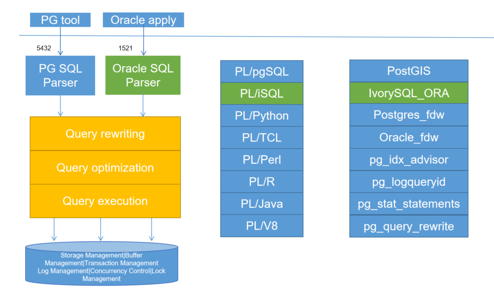

IVORYSQL framework design
-
In order to minimize changes to the original Postgres, it is compatible with Oracle. We need to implement a framework for dual-parser, dual-port, modal PLPGSQL to implement PLiSQL. The implementation flowchart is as follows:

1. Function
1.1. Dual-port design
-
The ivorysql port 5432 is kept compatible with the original Postgres situation, so Ivorysql uses another separate port to log in, which defaults to 1521. Log in from this port, and the Oracle compatibility mode is used by default. If you need to log in from port 5432 and also enter compatibility mode, you need to set it through the ivorysql.compatible_mode parameters;